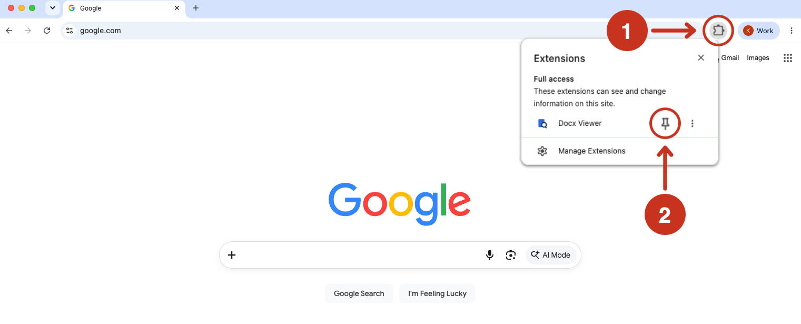
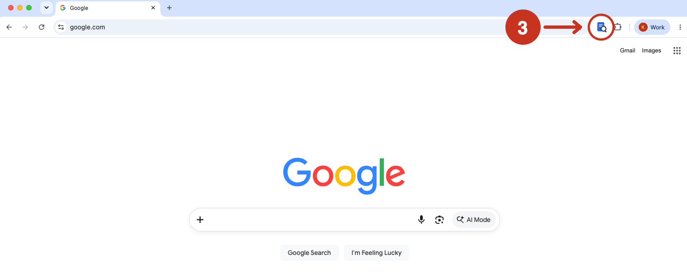

Docx Viewer Installed
Click the puzzle (1) piece in the top right of your browser. Then, click the little pin (2) next to the extension:

Open the extension (3) on any page to start using Docx Viewer:

Click the puzzle (1) piece in the top right of your browser. Then, click the little pin (2) next to the extension:

Open the extension (3) on any page to start using Docx Viewer:
